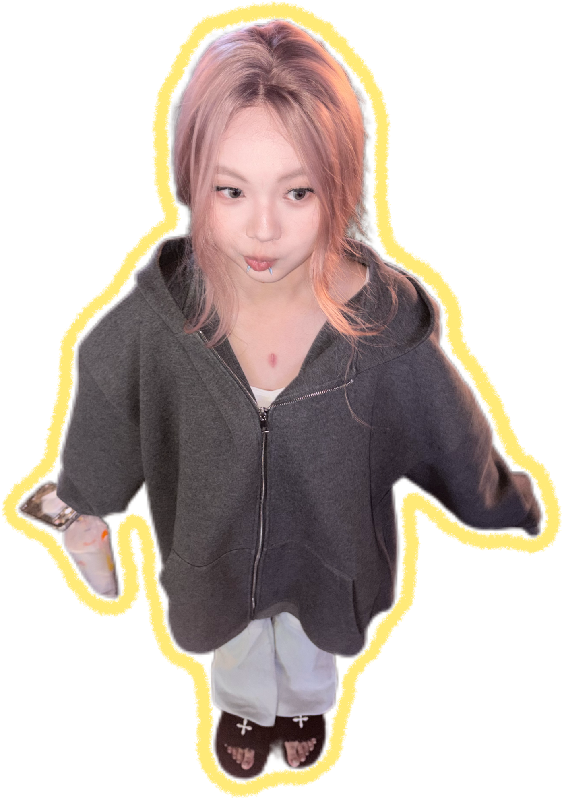
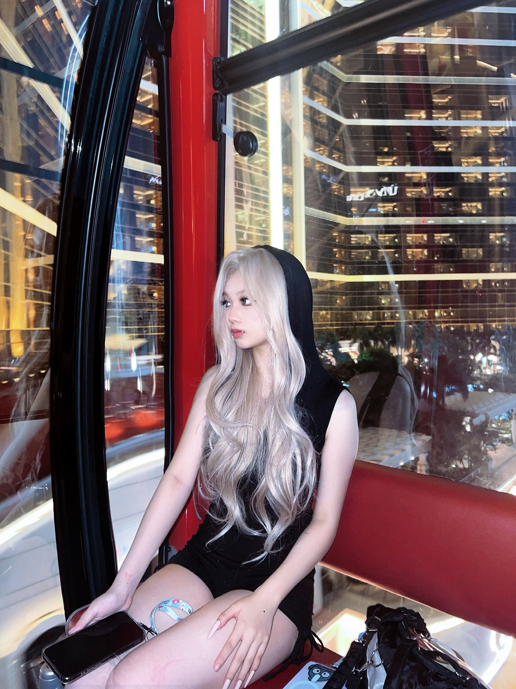
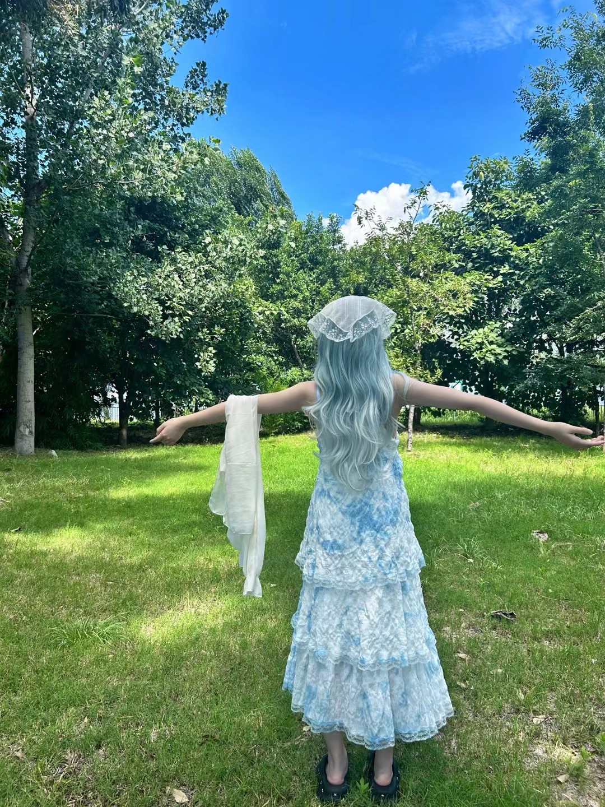
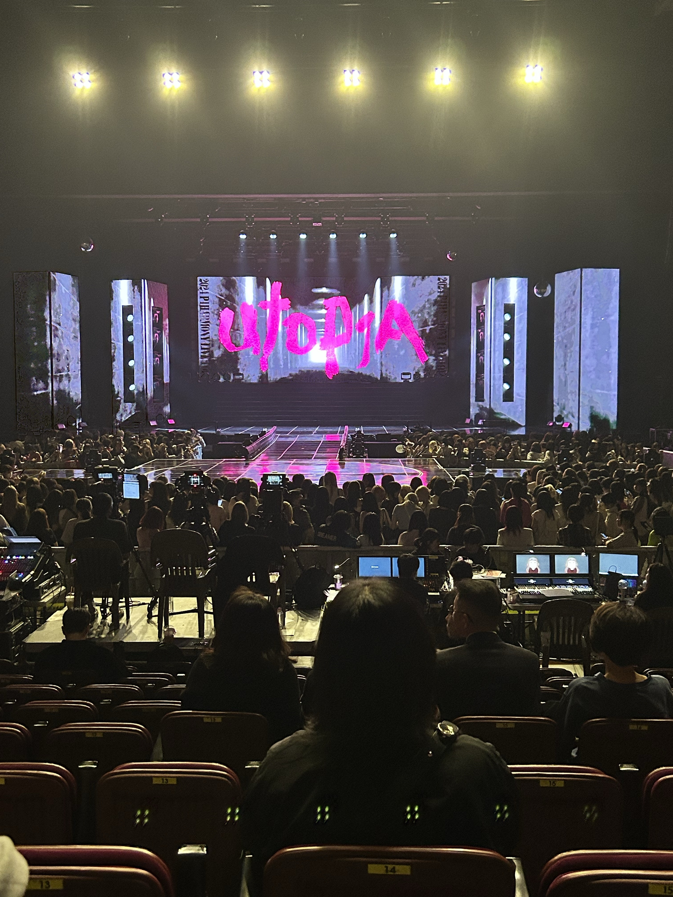
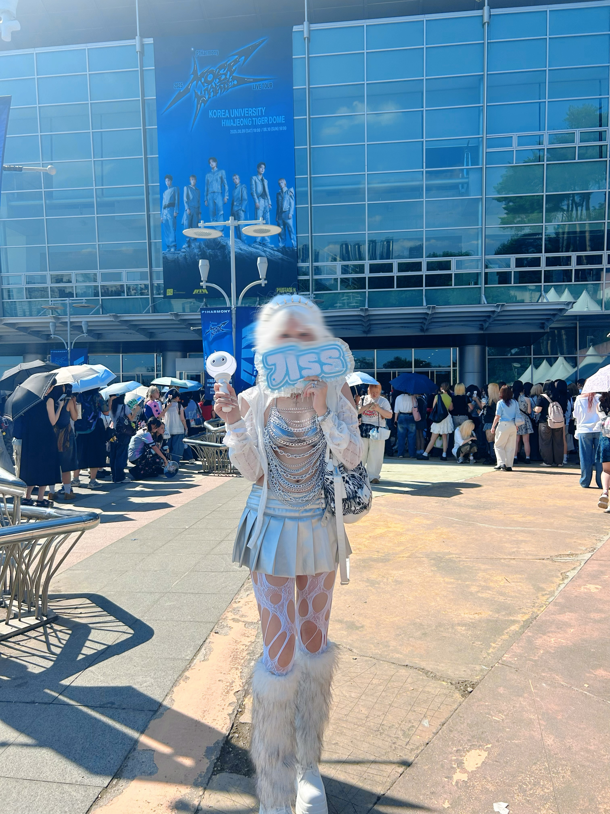
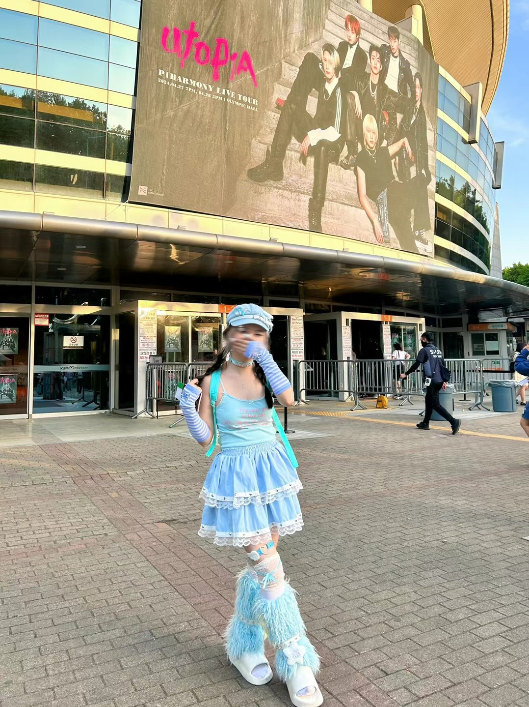
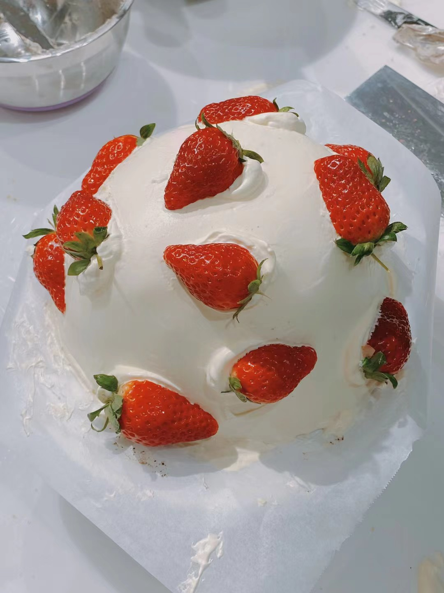
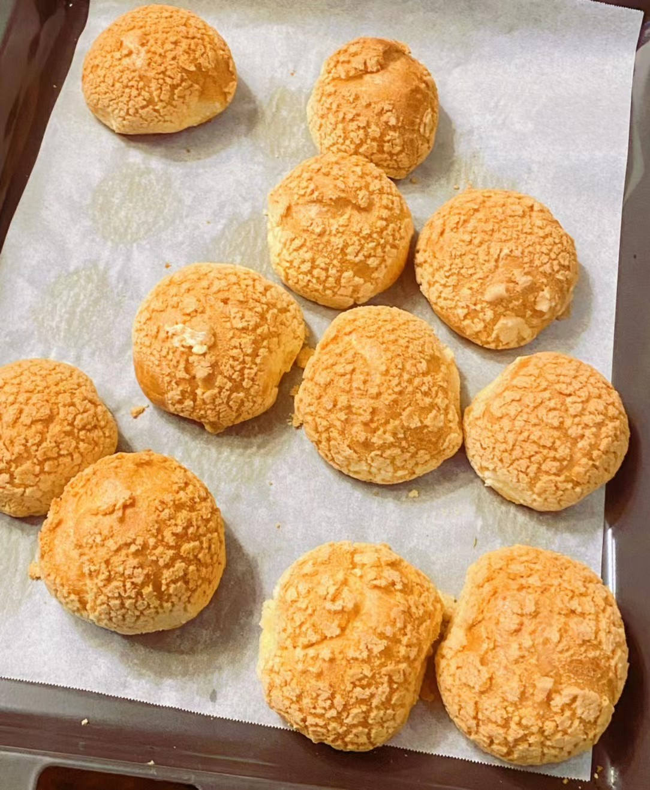
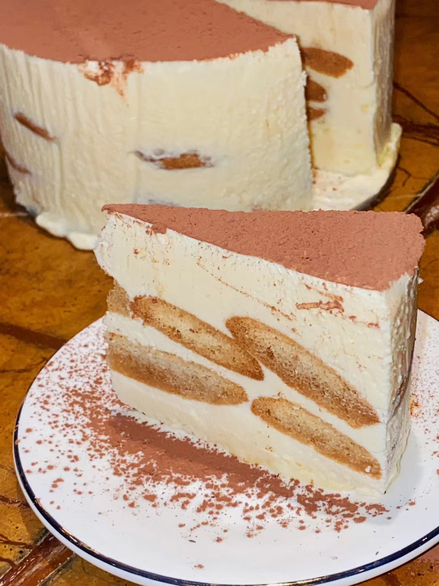

Content
Operations
Familiar with Xiaohongshu, Bilibili, Douyin, Weibo, Instagram and X; understands basic post and short-video workflows.
HELLO, I'M JENNIE ✦
Digital Media & Communication student,
K-pop traveller & curious maker.

a work in
progress ♡
SCROLL TO WANDER ↓
Familiar with Xiaohongshu, Bilibili, Douyin, Weibo, Instagram and X; understands basic post and short-video workflows.
Python and SQL foundations for data cleaning, simple analysis, visualisation and operational reviews.
Comfortable with CapCut for short-form editing, subtitles, pacing and basic post-production.
Proficient in Word, Excel and PowerPoint for organising information, reporting and archiving.
IELTS 6.5; comfortable with English-language learning, communication, reading and presentations.
I'm Jennie, a first-year student exploring the space between technology, media, and the stories people choose to tell.
ADHD means my curiosity sometimes changes direction quickly. Along the way I've learned to cook, make things with my hands, style piercings, analyse data, and turn a pile of clips into a short film.
Curiosity is my favourite skill.
I've followed the groups I love to new cities, new stages, and more tiny moments worth keeping.






When I'm not studying or travelling, I make comforting food and collect small creative experiments.
the joy is in trying ♡



Planned shots, organised 30+ clips, and edited a complete short film with captions and a polished finish.
Cleaned retail data with Python and turned sales patterns into five clear operational insights.
Translated client needs into organised content, page improvements, and careful pre-launch checks.
Helped students understand their options and keep their application materials moving forward.
Bachelor of Digital Media & Communication
Digital content creation · film production · media studies
Diploma in Computing & Data Science
Python · data analysis · information systems · statistics